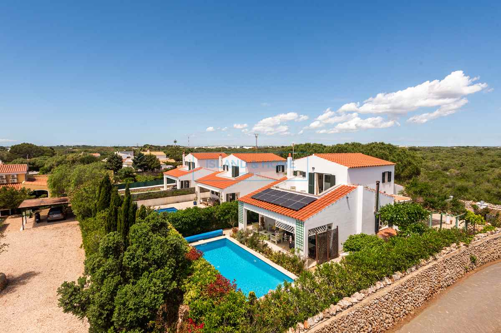

€597.000
Trebalúger, Es Castell, Menorca, Spain
Open the listingVillage character bargain: whitewash + terracotta, dark green shutters, dry-stone boundary, ancient pine and a private heated saltwater pool with solar — log burner + year-round comfort, not sleek-only obra nueva. Distinct from board trebaluger-93748 (€950k / 207/1,049), 93771 (€690k / 162/611) and 90158 (€655k / 135/786).
Opened 12 Sep 2026. Asking 597.000 €. Built 2007; 147 m²; double glazing; A/C; grid-tied solar; south-facing gardens. For Sale (not SSTC). Habitable now.